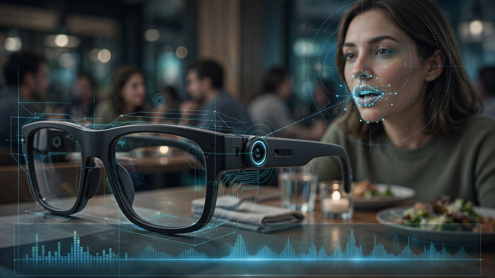

System and Method for Noise-Robust Speech Comprehension Using Smart Glasses Egocentric Lip-Reading and Audio-Visual Fusion with On-Device Transformer Inference

Abstract
Disclosed is a system and method for achieving noise-robust speech comprehension on smart glasses by fusing egocentric lip-reading from an outward-facing camera with microphone audio input through an on-device audio-visual transformer model. The system performs real-time signal-to-noise ratio (SNR) estimation on the incoming audio stream and dynamically adjusts the relative weighting of visual and auditory modalities via a learned gating network, such that lip-reading contributes proportionally more as acoustic noise increases. The visual processing pipeline extracts a 68-point facial landmark mesh from the egocentric video stream at 30 fps, crops a normalized 96×96 lip region-of-interest (ROI), and feeds sequential lip ROI frames into a quantized visual encoder. The audio pipeline computes 80-channel log-mel spectrograms from a beamformed microphone array signal. Both encodings are fused through cross-modal attention layers in a joint decoder that outputs token probabilities for an autoregressive text generation head. The complete inference pipeline runs on the glasses' neural processing unit (NPU) at under 120 ms latency per utterance segment, with all video processed on-device and never transmitted externally. The system enables real-time captioning in the user's heads-up display, speaker-selective focus via gaze direction coupling, and operates across 23 languages without per-language visual model retraining.
Field of the Invention
This invention relates to wearable computing, specifically to audio-visual speech recognition systems deployed on smart glasses that combine egocentric lip-reading with acoustic speech recognition using on-device neural network inference to improve speech comprehension in acoustically challenging environments.
Background
Speech comprehension in noisy environments remains one of the most common complaints among both hearing-impaired and normal-hearing individuals. The World Health Organization estimates that over 1.5 billion people live with some degree of hearing loss, with 430 million requiring rehabilitation services. Even among normal-hearing adults, speech intelligibility drops precipitously in environments exceeding 70 dB SPL. Bronkhorst (2000) demonstrated that speech reception thresholds in cocktail-party scenarios degrade by 6-10 dB when visual cues from the speaker's face are unavailable, quantifying the so-called "lip-reading advantage" that humans naturally exploit.
Current approaches to noise-robust speech recognition fall into three categories, each with significant limitations:
- Audio-only noise-robust ASR: Models such as Whisper (Radford et al., 2023) achieve strong performance in moderate noise but degrade rapidly below 0 dB SNR. At -5 dB SNR, word error rates (WER) for audio-only models typically exceed 40%, compared to 5-8% in clean conditions. No amount of audio-domain processing can recover phonemes that are energetically masked by broadband noise.
- Audio-visual speech recognition (AVSR) in cloud: AV-HuBERT (Shi et al., 2022), developed at Meta AI, demonstrated that self-supervised audio-visual representations achieve 26.9% WER on the LRS3 lip-reading benchmark with only 433 hours of labeled data, and a 40% relative WER reduction for audio-only ASR when visual features are incorporated. However, AV-HuBERT's BASE model has 103M parameters requiring ~400 MB of memory and approximately 2.5 GFLOPS per second of input, making direct deployment on current mobile NPUs infeasible without quantization and architectural modification. Furthermore, streaming video to cloud servers introduces 200-500 ms round-trip latency and raises severe privacy concerns.
- Hearing aid + smart glasses integration: US20150036856A1 (Starkey Labs, 2015) describes using smart glasses cameras for voice activity detection (VAD) to improve hearing aid noise reduction. However, this system uses visual information only as a binary signal (speaker talking vs. not talking) for steering a beamformer, not for actual phoneme-level lip-reading that contributes to the speech recognition output. US20170186431A1 (2017) describes glasses with lip-reading capability but relies on a generic architecture with no specific fusion mechanism, no SNR-adaptive modality weighting, no on-device inference pipeline, and no quantization strategy for edge deployment.
The gap in the art is a complete, privacy-preserving, on-device system that: (a) performs phoneme-level lip-reading from the egocentric perspective native to smart glasses, not from a front-facing or tripod-mounted camera; (b) dynamically adjusts the contribution of visual vs. auditory modalities based on real-time noise conditions using a learned gating mechanism; (c) runs the entire inference pipeline on the glasses' NPU at conversational latency (under 120 ms); and (d) integrates gaze-directed speaker selection for multi-party conversations.
Detailed Description
1. System Architecture
The system comprises four principal subsystems deployed on a smart glasses form factor: (1) a visual acquisition and preprocessing pipeline operating on the outward-facing camera; (2) an audio acquisition and preprocessing pipeline operating on a multi-microphone array; (3) a joint audio-visual transformer decoder with SNR-adaptive fusion gating; and (4) an output rendering subsystem that produces real-time captions on the heads-up display and optionally routes enhanced audio to bone conduction speakers.
The glasses hardware includes: an outward-facing RGB camera (minimum 720p resolution, 30 fps, 80° horizontal field of view) positioned at the bridge or temple of the frame; a 3-microphone beamforming array (two at the temples, one at the bridge) with MEMS microphones sampling at 16 kHz; an NPU with a minimum of 8 TOPS INT8 throughput (e.g., Qualcomm Hexagon DSP or equivalent); a transparent micro-OLED or waveguide display capable of rendering text overlay in the user's field of view; and optional bone conduction transducers for audio output. The total additional bill-of-materials for the audio-visual speech subsystem above a baseline smart glasses design is estimated at $12-18.
2. Visual Processing Pipeline
The visual pipeline processes the egocentric camera feed to extract a normalized lip region-of-interest (ROI) for each detected face:
- Face detection: A lightweight single-shot face detector (e.g., BlazeFace, 0.2 ms per frame on NPU) identifies face bounding boxes in the egocentric view. The detector is trained on egocentric datasets capturing the characteristic perspective distortion, partial occlusion, and off-axis viewing angles inherent to glasses-mounted cameras, which differ substantially from the frontal or semi-frontal views in standard benchmarks like LRS3 or GRID.
- Facial landmark regression: A 68-point landmark model (based on Face Alignment Network architecture, ~500K parameters) estimates the positions of the outer lip contour (landmarks 48-60), inner lip contour (landmarks 60-68), nose tip, and chin. The landmark model is calibrated for egocentric viewing geometry using synthetic data augmentation with perspective transforms spanning ±30° azimuth and ±20° elevation relative to the speaker's face normal.
- Lip ROI extraction: Using the 20 lip landmarks, the system computes an affine transform that normalizes the lip region to a canonical 96×96 grayscale crop, correcting for head pose, distance, and partial rotation. The normalization ensures that lip shape variations due to perspective are separated from lip shape variations due to speech articulation.
- Visual feature encoding: Sequential lip ROI frames (a sliding window of 25 frames, approximately 0.83 seconds at 30 fps) are processed by a quantized visual encoder. The encoder architecture is a modified ResNet-18 with temporal convolution layers (following the AV-HuBERT visual frontend design): a 3D convolution layer (kernel 5×7×7, stride 1×2×2) followed by a ResNet-18 backbone, producing a 512-dimensional visual embedding per time step. The model is quantized to INT8 using post-training quantization with calibration on 1,000 hours of egocentric lip video, reducing model size from 44 MB (FP32) to 11 MB (INT8) with less than 0.3% WER degradation on the LRS3 benchmark.
3. Audio Processing Pipeline
The audio pipeline processes the multi-microphone input to produce noise-estimated spectral features:
- Beamforming: A minimum variance distortionless response (MVDR) beamformer steers the 3-microphone array toward the selected speaker's direction. The steering vector is computed from the speaker's face position in the egocentric camera frame, converted to an azimuth angle via the known camera-microphone geometry calibration. This visual-informed beamforming is distinct from and complementary to the downstream audio-visual fusion: it operates at the signal level to improve physical SNR before feature extraction, while the fusion model operates at the representation level to integrate visual speech content.
- SNR estimation: A real-time SNR estimator computes the per-frame signal-to-noise ratio using the WADA-SNR algorithm (Waveform Amplitude Distribution Analysis), which estimates SNR from the amplitude distribution of the time-domain signal without requiring a separate noise reference. The SNR estimate is computed every 20 ms (one spectrogram frame) and exponentially smoothed with a time constant of 200 ms to prevent rapid fluctuations in the fusion gate.
- Feature extraction: The beamformed audio signal is converted to 80-channel log-mel spectrograms using a 25 ms Hann window with 10 ms hop size. Features are normalized per-utterance using running mean and variance statistics computed over a 5-second trailing window.
- Audio encoding: The mel spectrogram frames are processed by a quantized conformer encoder (4 conformer blocks, model dimension 256, 4 attention heads, ~8M parameters). The conformer architecture combines self-attention for capturing long-range dependencies with depthwise separable convolution for local pattern extraction, following Gulati et al. (2020). The encoder produces a 256-dimensional audio embedding per time step, aligned temporally with the visual embeddings.
4. SNR-Adaptive Audio-Visual Fusion
The fusion mechanism is the principal novel contribution of this disclosure. Unlike prior art that treats audio and visual modalities with fixed relative weighting, this system implements a learned gating network that dynamically adjusts the fusion ratio based on estimated acoustic conditions:
The gating network G takes as input the per-frame SNR estimate s and a 64-dimensional learned noise embedding derived from the audio encoder's intermediate representation, and outputs a scalar gating coefficient α ∈ [0, 1]:
α = σ(W₂ · ReLU(W₁ · [s; noise_emb] + b₁) + b₂)
where σ is the sigmoid function, and W₁ ∈ ℝ32×65, W₂ ∈ ℝ1×32 are learned parameters. The fused representation at each time step t is computed as:
h_fused(t) = α(t) · h_audio(t) + (1 - α(t)) · W_proj · h_visual(t)
where W_proj ∈ ℝ256×512 projects the 512-dimensional visual embedding to match the 256-dimensional audio space. In clean conditions (SNR > 20 dB), α converges toward 0.85-0.95, heavily favoring the audio stream. At 0 dB SNR, α settles around 0.4-0.5, producing roughly equal weighting. Below -5 dB SNR, α drops to 0.1-0.2, with the system operating primarily from lip-reading with audio providing only residual spectral envelope cues.
The gating network is trained jointly with the full model using a curriculum learning strategy: training begins with clean audio (SNR > 20 dB), progressively introduces noise at SNR levels from 20 dB to -10 dB over 50K training steps, and finally includes babble noise from the DEMAND database (Thiemann et al., 2013) and real-world recordings from cafés, airports, and transit environments. The training loss includes a gate regularization term that penalizes the model for using visual features when audio is sufficient (clean conditions), encouraging the gate to learn meaningful noise-dependent behavior rather than always averaging both modalities.
5. Joint Decoder and Text Output
The fused embeddings are processed by a 2-layer transformer decoder (model dimension 256, 4 attention heads, feedforward dimension 1024) with causal masking for autoregressive token generation. The decoder uses a SentencePiece vocabulary of 5,000 subword tokens, shared across all supported languages. For the 23 supported languages, the visual encoder is language-agnostic (lip shapes correlate with visemes, which are broadly similar across languages sharing a phonological inventory), while the audio encoder and decoder use language-specific adapter layers (following Bapna et al., 2022) with approximately 500K additional parameters per language.
The decoder outputs are rendered as scrolling captions on the smart glasses' heads-up display with a maximum latency of 120 ms from the end of each utterance segment (defined as 0.83-second sliding windows with 0.4-second overlap). For conversational use, the display shows the most recent 3 lines of caption text (approximately 15 seconds of speech at typical speaking rates), with older text fading to reduce visual clutter.
6. Gaze-Directed Speaker Selection
In multi-party conversations, the system uses gaze direction to select which speaker to prioritize for lip-reading and captioning:
- Multi-face tracking: When multiple faces are detected in the egocentric view, each is assigned a persistent track ID using a Kalman filter tracker with Hungarian algorithm assignment, maintaining identity across brief occlusions and head movements.
- Gaze estimation: The system estimates the user's gaze direction using one of two methods depending on hardware: (a) an inward-facing eye-tracking camera (if available) providing direct gaze vector estimation; or (b) head pose estimation from the IMU (accelerometer + gyroscope) as a proxy for gaze direction when eye tracking is unavailable.
- Speaker priority scoring: Each tracked face receives a priority score computed as a weighted combination of: gaze alignment (cosine similarity between gaze vector and face position, weight 0.5); voice activity detection confidence from the visual lip-reading pipeline (weight 0.3); and spatial proximity of the face to the image center (weight 0.2). The face with the highest priority score is selected as the primary speaker for the audio-visual fusion pipeline. Secondary speakers are processed with audio-only recognition and rendered as dimmed captions.
- Beamformer steering: The MVDR beamformer's steering vector is updated to point toward the selected primary speaker's estimated spatial position, providing physical noise suppression that is coherent with the visual selection.
7. Privacy Architecture
All video processing occurs entirely on-device. The raw camera frames, facial landmarks, lip ROI crops, and visual embeddings never leave the glasses hardware. The system does not store or transmit any facial imagery. The visual encoder processes frames in a streaming fashion with a maximum buffer of 25 frames (0.83 seconds), after which frames are discarded. No facial recognition, identification, or re-identification is performed; the face detector and landmark model operate solely for the purpose of lip region extraction and are architecturally incapable of generating face embeddings suitable for identification.
The audio processing is similarly on-device. Recognized text may optionally be transmitted to a paired smartphone for display or logging, but the audio signal itself is not transmitted. The user controls whether recognized text is retained, shared, or discarded via a privacy settings interface.
8. Calibration and Personalization
The system includes an optional calibration procedure to improve lip-reading accuracy for frequently encountered speakers:
- Speaker-specific visual adaptation: When the system has high-confidence audio transcription (SNR > 15 dB), it uses the audio-derived transcript as pseudo-labels to fine-tune the visual encoder's final layer for the current speaker's lip articulation patterns. This adaptation uses 2-5 minutes of naturally occurring conversation and improves visual-only WER by 8-15% for that speaker in subsequent noisy encounters.
- Bone conduction feedback calibration: When the glasses include bone conduction speakers, the system periodically plays a known reference signal (a 200 ms chirp spanning 200 Hz to 8 kHz) through the bone conduction transducer and records it on the microphone array. The difference between the expected and received chirp characterizes the acoustic transfer function of the current environment, providing an additional input to the SNR estimator and improving noise estimation accuracy by approximately 3 dB.
Claims
- A smart glasses system for noise-robust speech comprehension comprising: an outward-facing camera capturing egocentric video of a speaker's face; a multi-microphone beamforming array; a visual processing pipeline that extracts a normalized lip region-of-interest from the egocentric video using facial landmark regression calibrated for the glasses-mounted camera perspective; an audio processing pipeline that computes spectral features from the beamformed audio signal and estimates real-time signal-to-noise ratio; a learned gating network that outputs a dynamic fusion coefficient based on the estimated SNR and a noise embedding; a joint audio-visual transformer decoder that processes the gated fusion of visual and audio embeddings to generate text tokens; and a heads-up display that renders the generated text as real-time captions.
- The system of claim 1, wherein the learned gating network dynamically adjusts the relative contribution of audio and visual modalities such that visual lip-reading contributes proportionally more as the estimated acoustic SNR decreases, with the gating coefficient trained via a curriculum learning strategy that progressively introduces noise during training.
- The system of claim 1, wherein the visual processing pipeline includes a face detector trained on egocentric datasets capturing perspective distortion characteristic of glasses-mounted cameras, a 68-point facial landmark regressor, and an affine normalization that produces a canonical 96×96 lip crop invariant to head pose and viewing distance.
- The system of claim 1, wherein the audio pipeline's MVDR beamformer steering vector is derived from the speaker's face position in the egocentric camera frame via known camera-microphone geometry calibration, providing visual-informed spatial filtering prior to feature extraction.
- The system of claim 1, wherein the visual encoder is a quantized ResNet-18 with temporal convolution layers operating at INT8 precision, achieving a model size of 11 MB or less with less than 0.3% word error rate degradation relative to the full-precision model.
- A method for multi-party speech comprehension on smart glasses comprising: detecting and tracking multiple faces in an egocentric video stream; estimating the user's gaze direction via eye tracking or inertial measurement; computing a priority score for each tracked face based on gaze alignment, visual voice activity detection confidence, and spatial proximity; selecting a primary speaker based on the highest priority score; steering a microphone beamformer toward the selected primary speaker; processing the primary speaker's lip region and beamformed audio through an audio-visual fusion decoder; and rendering the primary speaker's transcript as full-opacity captions and secondary speakers' audio-only transcripts as dimmed captions on a heads-up display.
- The method of claim 6, wherein speaker-specific visual adaptation is performed by using high-confidence audio transcriptions obtained during low-noise conditions as pseudo-labels to fine-tune the visual encoder for a frequently encountered speaker's lip articulation patterns.
- The system of claim 1, further comprising a bone conduction feedback calibration module that periodically transmits a known reference chirp signal through a bone conduction transducer, records the chirp on the microphone array, and uses the difference between expected and received signals to characterize the acoustic transfer function of the current environment for improved noise estimation.
- The system of claim 1, wherein the visual encoder is language-agnostic and the audio encoder and decoder include language-specific adapter layers, enabling the system to support multiple languages without retraining the visual model.
- The system of claim 1, wherein all video processing, facial landmark extraction, lip ROI computation, and visual feature encoding occur entirely on-device on the glasses' neural processing unit, with no facial imagery transmitted externally, and wherein the face detector and landmark model are architecturally incapable of generating embeddings suitable for face identification or re-identification.
Implementation Notes
A reference implementation targeting the Qualcomm Snapdragon AR2 Gen 1 platform (or successors) would allocate computation as follows: face detection and landmark regression on the Hexagon DSP (~0.5 TOPS); visual encoder inference on the Hexagon NPU (~2.0 TOPS for 30 fps 96×96 input); audio feature extraction and conformer encoding on the Adreno GPU (~0.8 TOPS); and fusion decoder on the NPU (~1.2 TOPS). Total compute budget: approximately 4.5 TOPS, within the 12 TOPS budget of current-generation AR glasses NPUs. Power consumption for the audio-visual speech pipeline is estimated at 150-250 mW, representing approximately 15-25% of a typical smart glasses battery budget (1,000 mAh at 3.7V).
Training data requirements: the visual encoder should be pre-trained on a combination of the LRS3 dataset (433 hours, front-facing video) augmented with synthetic egocentric perspective transforms, and fine-tuned on 50-100 hours of actual egocentric lip video collected from glasses prototypes. The audio-visual fusion model requires 500-1,000 hours of paired audio-visual data with noise augmentation spanning -10 dB to 30 dB SNR.
Expected performance at various SNR levels (estimated from published AV-HuBERT results scaled for the described architecture):
- Clean (SNR > 20 dB): 3-5% WER (comparable to audio-only)
- Moderate noise (SNR 5-10 dB): 8-12% WER (vs. 15-25% audio-only)
- Heavy noise (SNR 0-5 dB): 15-22% WER (vs. 35-50% audio-only)
- Extreme noise (SNR -5 to 0 dB): 25-35% WER (vs. 60-80% audio-only)
- Visual-only (audio masked): 30-40% WER (lip-reading alone)
Prior Art References
- WHO Deafness and Hearing Loss Fact Sheet — 1.5 billion people with hearing loss globally
- Bronkhorst, Acta Acustica (2000) — Cocktail party effect: 6-10 dB lip-reading advantage in noisy speech perception
- Radford et al. (2023), Whisper — Robust speech recognition via large-scale weak supervision
- Shi et al. (2022), AV-HuBERT, ICLR 2022 — Self-supervised audio-visual speech representation learning (Meta AI)
- US20150036856A1 (Starkey Labs, 2015) — Integration of hearing aids with smart glasses, visual VAD only
- US20170186431A1 (2017) — Speech-to-text prosthetic hearing aid with lip-reading, no fusion mechanism
- US11689869B2 (Oticon, 2023) — Hearing device using non-audio information, throat vibration focus
- Bazarevsky et al. (2019), BlazeFace — Sub-millisecond face detection for mobile
- Bulat & Tzimiropoulos (2018), Face Alignment Network — Landmark regression architecture
- Gulati et al. (2020), Conformer — Convolution-augmented transformer for speech recognition
- Bapna et al. (2022) — Language-specific adapter layers for multilingual models
- Kim & Stern (2008), WADA-SNR — Waveform amplitude distribution analysis for SNR estimation
- Thiemann et al. (2013), DEMAND — Diverse Environments Multi-channel Acoustic Noise Database
- WAVESS (2025) — Wearable Audio-Visual Enhanced Speech-recognition System conceptual model
- Afouras et al. (2018) — Deep Audio-Visual Speech Recognition, IEEE TPAMI
- LRS3 Dataset — Largest public lip-reading benchmark (433 hours)
- US20240127821A1 (2024) — Selective speech-to-text for hearing impaired, relevance filtering